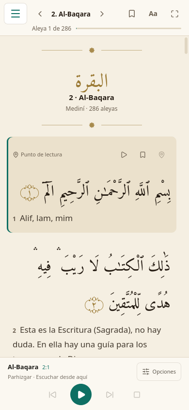

Miércoles 21 de octubre
9 de Jumada al-awwal de 1448
Los avisos están apagados. Sin permiso de notificaciones no suena el Adhan.
Próximo rezo
16:40
Faltan 1 h 29 min
Tocá un rezo para marcarlo. Los días anteriores se corrigen en Registro.
4 días seguidos
Mejor racha: 12 días. En total, 37 días completos y 214 rezos marcados.
5 de 5 Incompleto

El lector conserva su diseño actual: ya tiene barra propia, paneles como hoja inferior y reproductor abajo. Solo se suma la barra inferior de la app.
Los cambios se aplican al tocar Guardar. Si volvés sin guardar, se descartan.